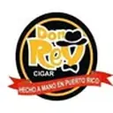

Don Rey Cigar
Fábrica y cadena de tabaquerías · Caguas, Puerto Rico
Don Rey Cigar aparece en La Hoja Boricua, la guía de cigarros de artesanos boricuas, con 1 cigarro en el catálogo.

Fábrica y cadena de tabaquerías · Caguas, Puerto Rico
Don Rey Cigar aparece en La Hoja Boricua, la guía de cigarros de artesanos boricuas, con 1 cigarro en el catálogo.